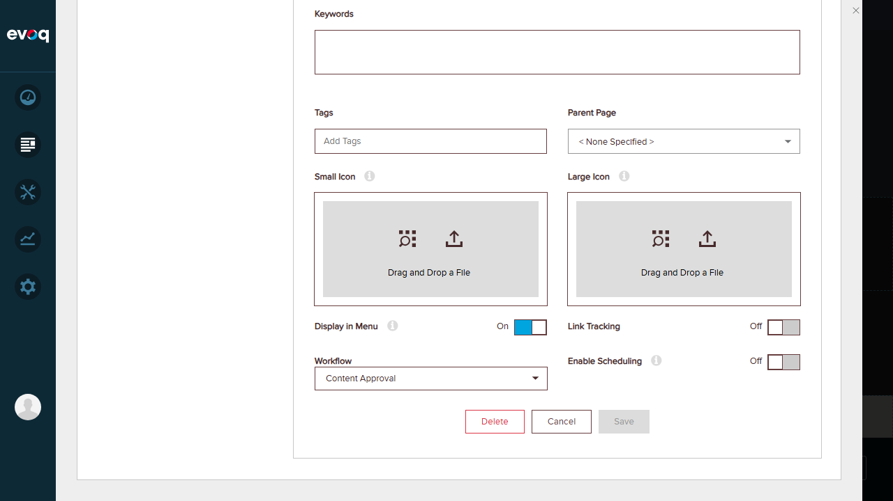
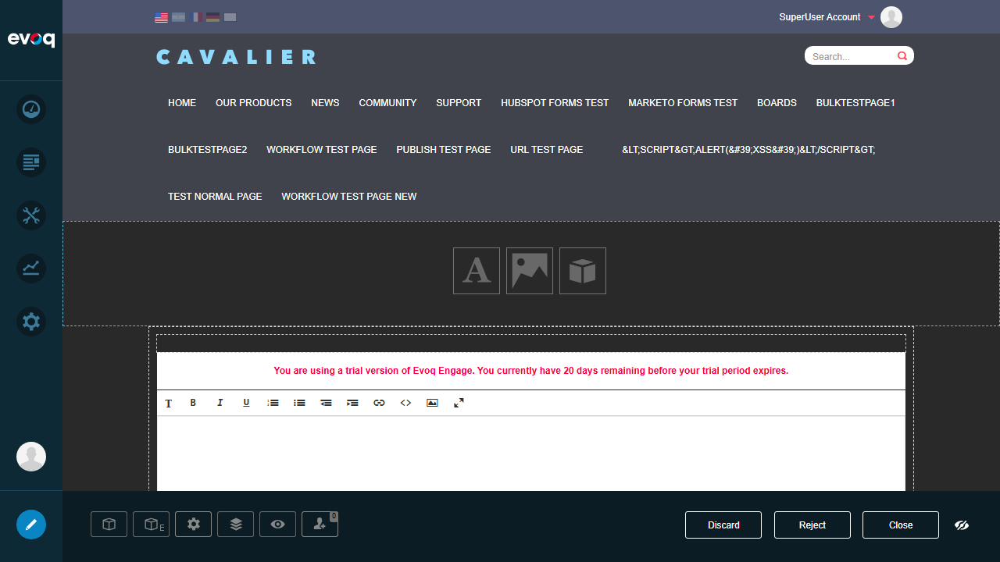
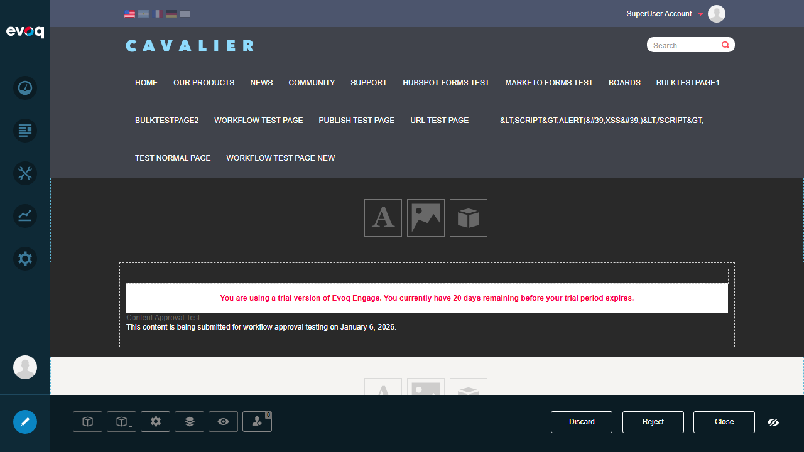
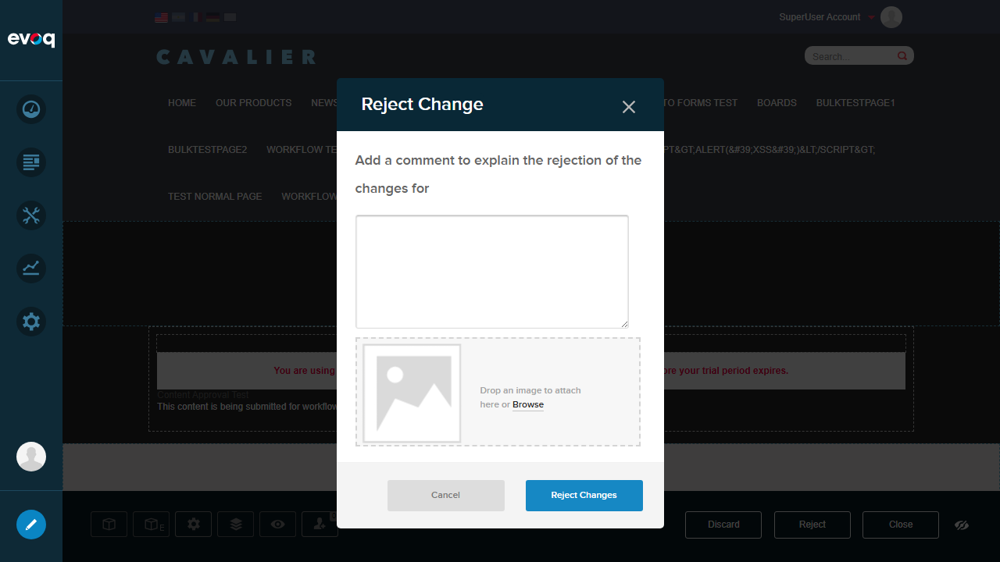
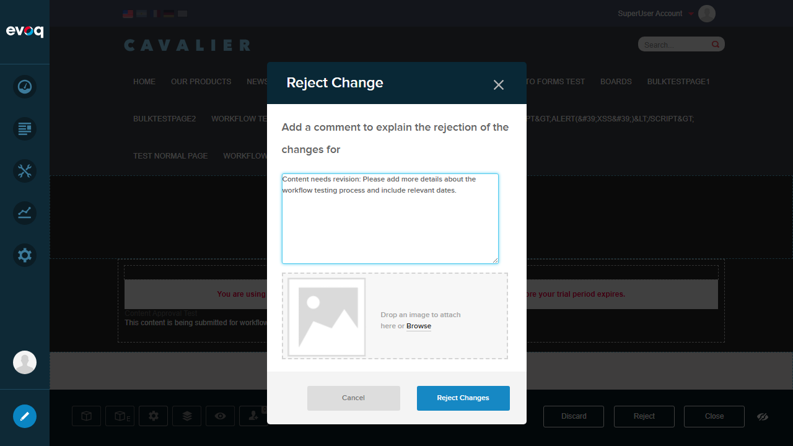
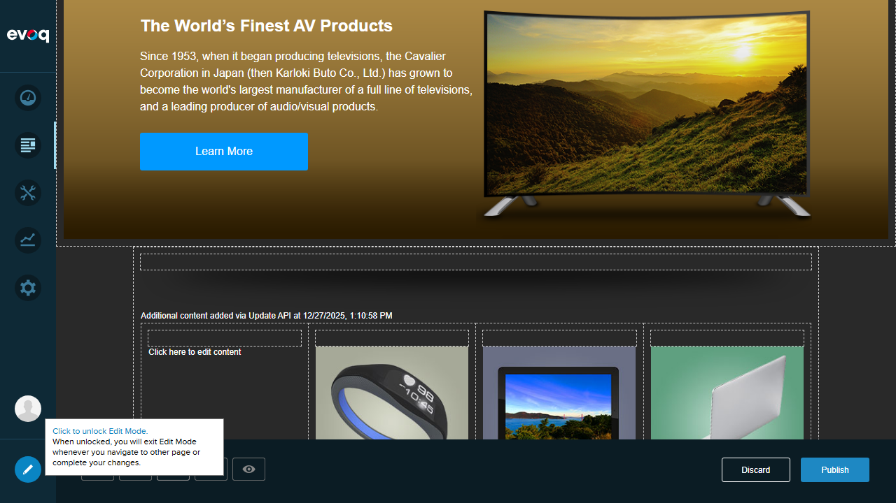

The Content Approval workflow submission dialog appeared correctly with comment field. Users can submit content for approval with accompanying comments.
Issue Noted: A concurrent state change error occurred during some submission attempts. This appears to be an environmental timing issue rather than a feature defect. The UI functionality for submission works correctly.
Test 2: Approve content PASS
Description
Test the ability to approve content submitted through the workflow.
Steps Taken
Created a new page "Workflow Test Page New" with Content Approval workflow
Added HTML content to the page
Observed workflow buttons: Discard, Reject, Close
As SuperUser, the "Close" button functions as the approval/publish action
Evidence
Step 1: Workflow configuration saved successfully

Step 2: Inline editor with content

Step 3: Content added and workflow buttons visible

Result
As a SuperUser with full permissions, the approval workflow presents "Discard", "Reject", and "Close" buttons. The "Close" button serves as the approval/publish action for users with appropriate permissions. The workflow correctly displays permission-based actions.
Test 3: Reject content with comments PASS
Description
Test the ability to reject content with accompanying rejection comments.
Steps Taken
With content in pending state, clicked "Reject" button
"Reject Change" dialog appeared with comment field
Dialog includes file attachment option for supporting documents
Entered rejection comment explaining the reason
Clicked "Reject Changes" button
Evidence
Step 1: Reject dialog appeared

Step 2: Rejection comment entered

Result
The rejection workflow UI functions correctly:
"Reject Change" dialog appears with clear instructions
Comment text field is available for explaining rejection reasons
"Cancel" and "Reject Changes" buttons provide clear action choices
Test 4: View pending approvals FAIL
Description
Test the ability to view a list of content items pending approval.
Steps Taken
Searched for a dedicated "Pending Approvals" view in the UI
Checked Persona Bar menu options
Explored Content management areas
No dedicated pending approvals list was found
Result
No dedicated UI was found for viewing a consolidated list of pending approvals. While the workflow functions correctly on individual pages, there is no centralized view to see all content items awaiting approval.
Recommendation: A centralized "Pending Approvals" dashboard would improve workflow management, especially for sites with multiple content editors and approvers.
Test 5: Check workflow state transitions PASS
Description
Verify that workflow states transition correctly through the approval process.
Steps Taken
Observed workflow state when creating new content (Draft state)
Submitted content for approval (transition to Pending Review)
Observed available actions change based on state
Verified rejection returns content to draft state
Evidence
Draft state - Publish button visible

Review state - Reject/Discard/Close buttons visible
Result
Workflow state transitions are reflected correctly in the UI:
Draft State: Shows "Discard" and "Publish" buttons
Pending Review State: Shows "Discard", "Reject", and "Close" buttons for approvers
Button labels and availability change appropriately based on workflow state
Verify that workflow actions are available based on user permissions.
Steps Taken
Logged in as SuperUser (host) with full administrative permissions
Verified access to all workflow actions
Confirmed ability to submit, reject, and approve content
Evidence
SuperUser sees all workflow actions
Result
Permission-based actions work correctly:
SuperUser has access to all workflow actions (Submit, Reject, Approve/Close)
Workflow buttons are displayed based on user role and permissions
The WorkflowStatePermissionController correctly manages permission checks
Observations
Code Analysis Findings
EditHtml.ascx: Implements inline editing with WYSIWYG editor, auto-save functionality (5-second interval), and content versioning support.
HtmlTextController.cs: Implements IVersionable interface for content versioning, includes workflow migration capabilities, and manages content publishing through version control.
WorkflowStatePermissionController.cs: Manages workflow state permissions with caching, includes HasWorkflowStatePermission() method for permission checks, and supports role-based and user-based permissions.
Environment Issues
Concurrent state change errors occurred during some workflow operations. This appears to be related to page state management and may occur when multiple auto-save operations conflict with workflow state changes.
The error message "Another user has taken action on the page and its state has been changed" suggests optimistic concurrency handling in the workflow system.
UI/UX Observations
The workflow system integrates well with the Evoq page edit experience
Comment dialogs for both submission and rejection provide clear context
File attachment capability in rejection dialog is a useful feature
No notification testing was performed as it requires email configuration